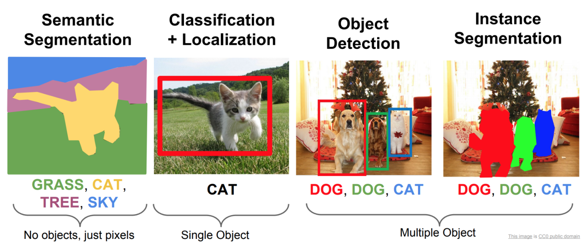
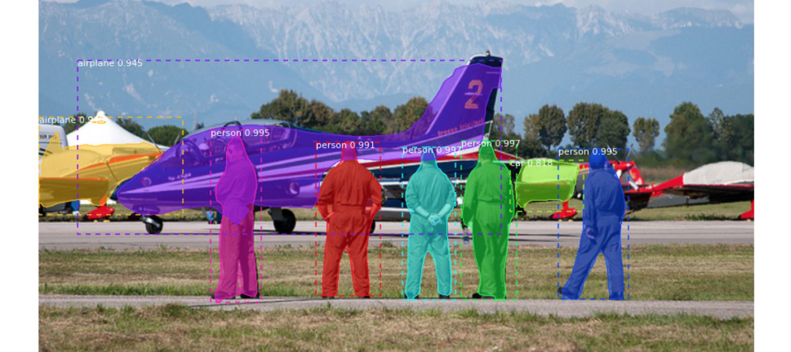
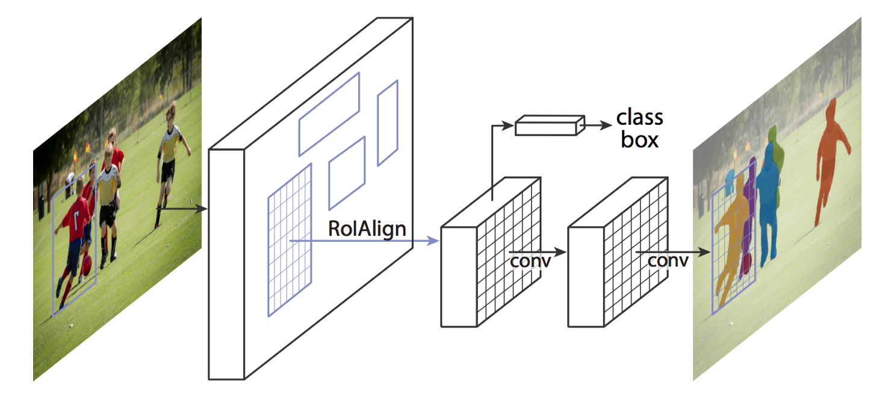
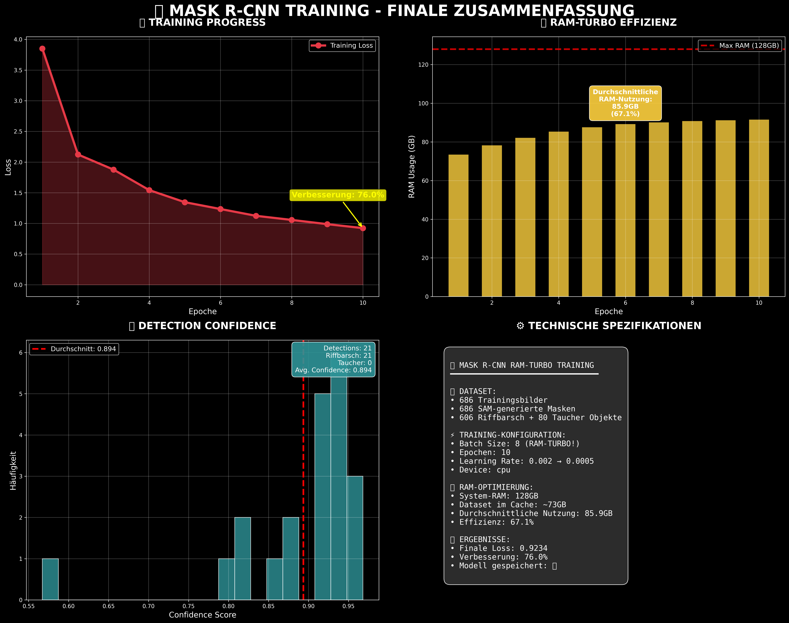
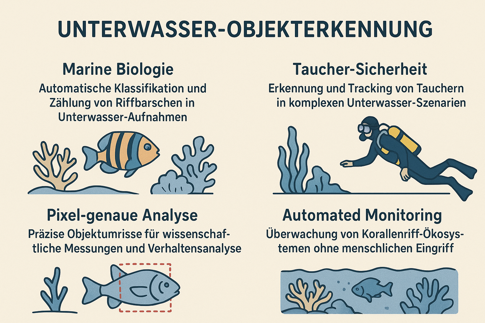

mod_101_mask_r_cnn_train_ram_turbo.py - Erweiterte Computer Vision für präzise Objekterkennung

Dieses Modul implementiert Mask R-CNN Instance Segmentation für pixel-genaue Objekterkennung und Klassifikation von Riffbarschen und Tauchern.

2-Stufen-Architektur: Erst werden Objektvorschläge generiert (RPN), dann wird jeder Vorschlag klassifiziert und eine pixel-genaue Maske erstellt.
ResNet50 + FPN: Das Backbone-Netzwerk extrahiert Features in verschiedenen Auflösungen für robuste Objekterkennung.



Instance Segmentation Vorteile: Im Vergleich zu einfacher Klassifikation liefert Mask R-CNN pixel-genaue Objektgrenzen, die für wissenschaftliche Messungen, Verhaltensanalyse und automatisierte Zählung essentiell sind.
Robuste Erkennung: Das Multi-Scale Feature Pyramid Network ermöglicht zuverlässige Objekterkennung bei verschiedenen Größen und Beleuchtungsverhältnissen.